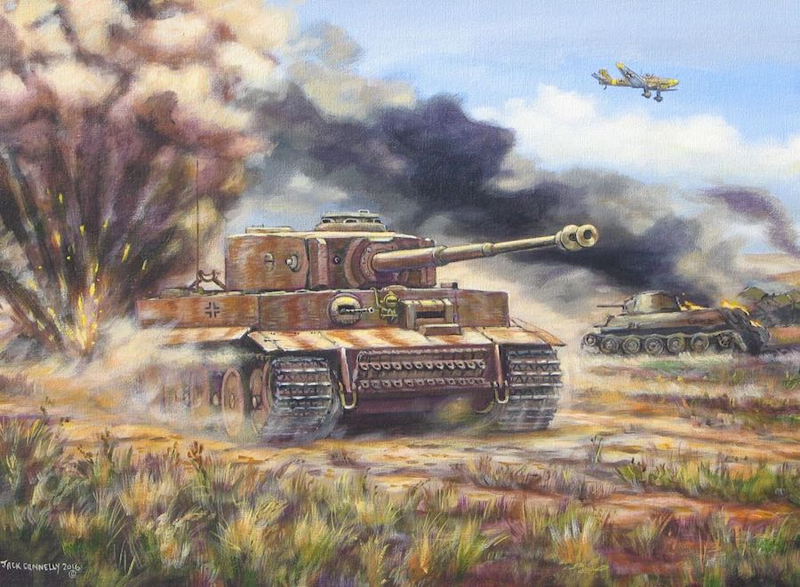
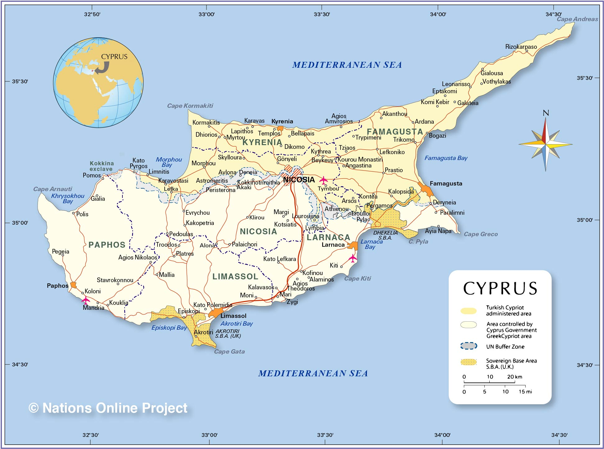
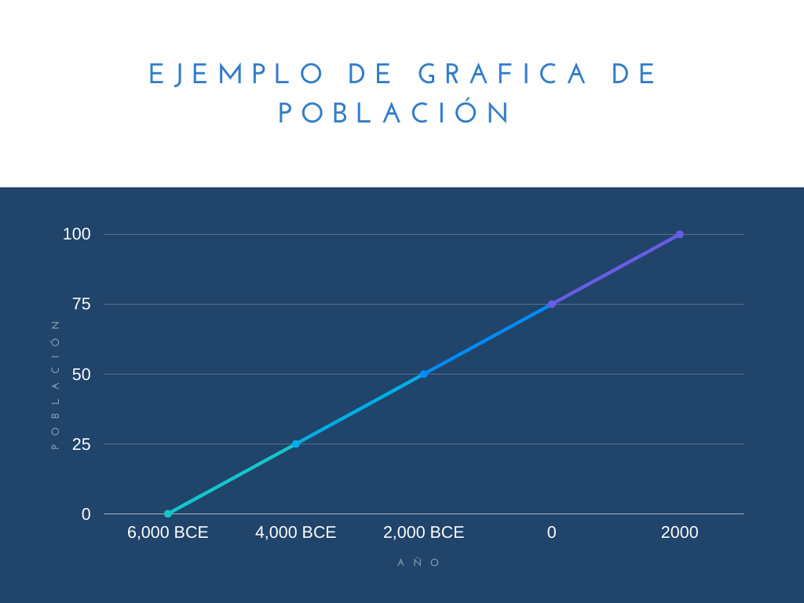

La mayoría de los conflictos y guerras tienen un propósito y algo que los impulsa. Muchas veces este impulso o razón recae en lo mismo una y otra vez, esto es conocido como ideologías. No todos pensamos de la misma manera, no todos vemos el mundo desde el mismo punto de vista y no todos podemos ver una situación en su totalidad.
Ejemplos incluyen las guerras como Vietnam y Corea donde simples ideas y sistemas como el capitalismo y el comunismo iniciaron estas guerras y esto no es algo totalmente nuevo, hay varios ejemplos a través de la historia, las cruzadas templarias de la era medieval, las inquisiciones, tomas de terreno a la tierra que se cree más poderosa como con Roma, la pirateria de 1600, la imposición de leyes y religión en México por parte de España en el siglo XVI y varios otros tienen ideas y leyes como su centro, todo dependiente de puntos de vista.
El pogreso
"A favourite theory of mine is no occurance is sole or solitary, but is mearly a repetition of a thing which has happened before, perhaps often."
-Mark Twain
Esto es bastante cierto, los conflictos, por pequeño que sean practicamente son la repetición de algo anterior. Por ejemplo, la guerra de los 30 años (1618-1648) y la Guerra de Tugoslavia (1991-1995) fueron causadas por religión y por la perspectiva de otras creencias causadas por estas religiones.

Ilustración de un Tiger I, T-34s y Ju-87 de 1943, Batalla de Kursk (Jack Connelly, 2016)
Ejemplos en la Historia
02/12/21
Mayores Guerras, Conflictos y Eventos Repetitivos por Ideologia o Progreso
Una de las razones de repetición de la historia son las creencias, sean religiones, leyes o ideas politicas.
Un ejemplo moderno de estos conflictos puede ser la guerra de Israel-Palestina, este conflicto empezo por creencias entre los judios y musulmanes, esto empezo cuando la ONU mando a los refujiados judios al territorio de Israel, que fue anexado de palestina. Desde ahi la zona ha estado plagada de conflicto, esto es porque los judios y palestinos creen que merecen la zona, los palestinos porque era parte de su territorio y los judios diciendo que es suya de acuerdo a la historia y a la religión (la tierra sagrada).
Todo esto es moderno pero el pasado tampoco se salva, en la era medieval los conflictos por religiones eran muy comunes, prinsipalmente con el imperio romano y su institución del catolicismo, despues durante 1500-1600 las crusadas y conflictos en el "Mundo Magico" (America) tambien fueron causados por estas creencias.
Recursos como una causa
Los recursos como la comida, materiales, minerales y varios otros han sido una parte importante de la humanidad, son necesarios para poder sobrevivir
"A favourite theory of mine is that no occurance is sole or solitary, but is mearly a repetition of a thing that has happened before, and perhaps often"-Mark Twain
Esta frase encapsula perfectamente todo en este articulo, las peleas por recursos podran no ser muy abiertas pero las mayores razones por las que paises entran a una guerra es por esto, en su mayoria son recursos monetarios, al final la guerra para muchos es un negocio. Ejemplos como la guerra de Afghanistan es uno, el conflicto no era necesario para Estados Unidos, ya que no le afectaba mayormente, considerando que afghanistan no exportaba a Estados Unidos y se encuentran a mas de 11,000Km pero con esto podian producir y probar nuevas armas que al venderlas generan una gran cantidad de dinero.
Territorio
Las guerras medievales son un muy gran ejemplo de esto, la necesidad de poder y de territorio, simplemente el ver al imperio romano muestra mucho, uno de los imperios mas grandes (en un solo tiempo), otro ejemplo es el Reino Britanico que a traves de la historia han conquistado muchos lugares, tanto asi que solo hay Todos los países que hemos invadido y los pocos a los que nunca llegamos, solo hay 22 de los actuales estados que Gran Bretaña nunca ha ocupado a lo largo de su historia.
La necesidad de tener mas territorio siempre ha estado presente y no es nada nueva como se puede ver. Ejemplos modernos pueden ser el de esto es la isla de Cyprus, esta fue dividida por religion y territorio, donde los turcos querian la isla para ellos, los griegos en el otro lado pensaban que la isla era suya ya que la mayoria de su población era griega. Esto empezo un conflicto que el Reino Unido detuvo por un tiempo con un tratado peor Turquia rompio este tratado al mandar tropas militares tras varias manifestaciones, esto cause que grecia mandara tambien sus tropas. Despues de mucho pelear para determinar de quien era el territorio la ONU hizo una linea de "Alto al fuego" donde el pais se dividio en 4 al final. El este de la isla es griega, el oeste turca, el sur es britanico y en el centro de la isla hay una linea que no tiene dueño ya que es el alto al fuego

Mapa de Cyprus
Ejemplos Modernos
29/01/22
Soldados Rusos peleando en la nieve, Ucrania 2022
A menos de que vivas bajo una piedra sabras que rusia ha invadido Ucrania (Febrero 24, 2022). De acuerdo a Putin la razón de esta invasión es que Ucrania estaba siendo manipulada por el oeste y la OTAN (Organización del Tratado del Atlántico Norte), añadido a esto Vladimir Putin cree que Ucrania es como un hermano perdido de Rusia de acuerdo a un texto escrito por Vladimir Putin, el dice que en caso de llegar a Ucrania seria aceptado con brazos abiertos, la realidad fue muy opuesta.
En la madrugada de el 24 de Febrero bombardeo ruso empezo en Ucrania y al momento en que rusos entrarón a Ucrania se encontraron con oposición fuerte de la guardia nacional de Ucrania, hasta ahora la verdadera razón de Putin no es conocida y quien sabe si lo sera pero muy probablemente es su manera de ver el mundo, creyendo que la gente ucraniana necesita ayuda o salvación del resto. Para perspectiva putin cree que el colapso de la URSS fue el evento mas catrastofico de el Siglo XX, se le olvida que dos guerras mundiales pasaron ese siglo...
La repetición de estas razones
02/02/22
¿Porque seguimos cayendo?
Ya vimos las razones mas comunes pero ¿porque pasa esto?.
Las razones son muy variadas de porque seguimos cayendo en el mismo problema. El poder y la población son las prinsipales causas de la repetición de estas razones, a traves del tiempo la población mundial ha subido exponencialmente.
Poco a poco los paises requieren mas recursos que aunque se pueden producir dentro de su territorio no poseen el poder economico. Encima de esto hay recursos, como los recursos fosiles, que no se pueden producir. Estos se minan o extraen y una ves usados toman millones de años en producirse otra ves. El carbón y el petroleo se pueden considerar los dos recursos por los que mas se pelea. Conflictos conocidos como las "Guerras petroleras" son un claro ejemplo de esta escazes de recursos y necesidad de tener mas para satisfacer a la población rapidamente creciente.
Ejemplos incluyen:
La invasión de Kauwit (1990)
La invasión de Estados Unidos en Iraq (2003)
La guerra Iraq-Iran (1980-1988)
La guerra de las malvinas (1982)
La guerrra de Bolivia-Paraguay (1932-1935)
Otro problema es el espacio y territorio. Por la población rapidamente creciente, el espacio de vivienda se esparce pero llega a un punto donde no se puede mas. Para 2019, Nueva York tenia casi 8.419 millon de personas habitando ahi.
Esto hace que la industria no se pueda desarollar mucho, haciendo nuevo territorio necesario. La sobrepoblación no es nada nuevo, desde 1910 las ciudades grandes estaban llenas de gente a mas no poder.
Soluciones
La solucion no es tan simple. La sobrepoblación lleva mucho detras. El prevenir nuevas generaciones de ser tan grandes podria ser una violación de los derechos humanos, principalmente los siguientes articulos:
Articulo 1: Todos los seres humanos nacen libres e iguales en dignidad y derechos.
Articulo 3: Todo individuo tiene derecho a la vida, la libertad y seguridad de su persona
Como ya se ha mensionado antes, la población crece exponencialmente, haciendo que en lugar de que su crecimiento se vea como una line pareja, es una curvatura, similar a la de una enfermedad. Para poner un ejemplo estan las siguientes tablas (los numeros no son reales)

Ejemplo de Grafica SupuestaEjemplo de Grafica Real
Esto trae otro problema, poco a poco consumimos mas de lo que se puede producir, haciendo que la pelea por recursos sea mayor. El solucionar esto requereria casos extremos de reducir la población a traves de algun control externo o ley que no permita la reproducción masiva.
La contaminación es otro problema, esta hace que la tierra se haga menos fertíl haciendo que la gente se tenga que mover a nuevos lugares, haciendo la densidad de población (población por kilometro cuadrado) mas alta. Esto tambien hace las condisiones menos seguras para la gente, haciendo que la medicina pueda llegar a escazes. La solucion a esta es posible pero lenta, poco a poco el cambio a energias renovables esta pasando, el problema con estas energias es que son muy especificas, los paneles solares solo funcionan cuando hay luz del sol, las turbinas de viento cuando hay corrientes de aire, la energia hidraulica depende de la corriente del agua, los combustibles biologicos toman tiempo en crecer y la energia geotermica depende de actividad de la teirra; pero esto no es que todo sea inutil, una de las productoras de energia mas grande son las plantas nucleares.
Las plantas nucleares como solucion
Las plantas nucleares producen cantidades masivas de energia y el unico desecho constante que tienen es vapor de agua. El segundo desecho que sale alrededor de cada seis años es el uranio descargado que se desecha rapida y efectivamente antes de causar daño. Las plantas nucleares en especial las modernas son muy seguras, solo ha habido dos accidentes mayores con estas, son los siguientes:
Chernobyl: Abril 26, 1986. Causado por negligencia del gobierno tras no querer apagar la planta para pruebas, causando una sobrecarga de energia, destruyendo uno de los cuatro reactores
Fukushima: Marzo 11, 2011. Causado por un tsunami de 15 metros que destruyo la planta de poder y el enfriamento de tres reactores.
Podrias estar pensando, "Increible, porque no cambiamos". El problema de las plantas nucleares es su costo de contrucción, otro problema que no es muy grande pero existe es el de escazes de uranio, aunque el segundo no se notara hasta dentro de unos cientos de años.
 Los Conflictos
Los Conflictos Ejemplos en la Historia
Ejemplos en la Historia La Historia y su Repetición
La Historia y su Repetición Razones de los Conflictos
Razones de los Conflictos Ejemplos Modernos
Ejemplos Modernos
 La repetición de estas razones
La repetición de estas razones

 Meme
Meme